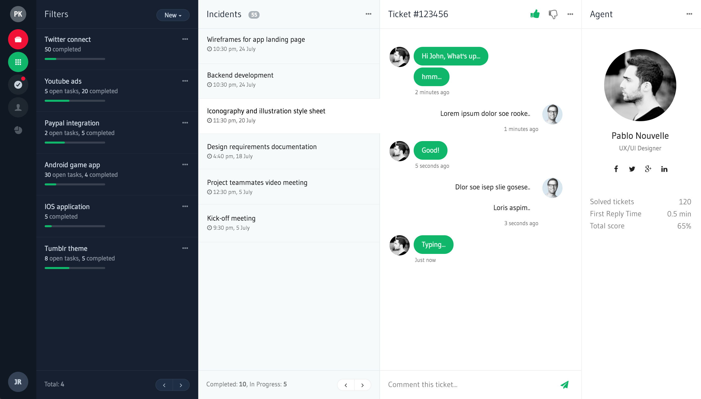
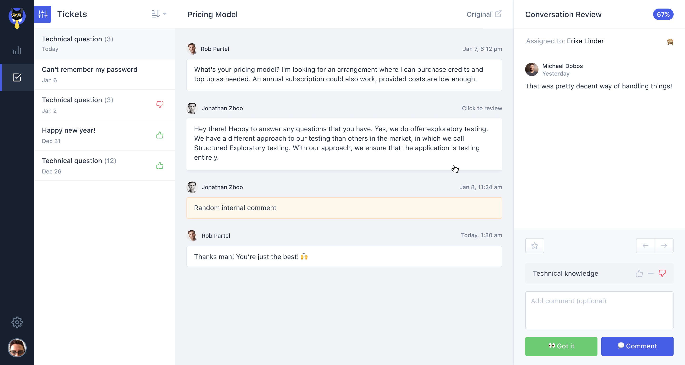
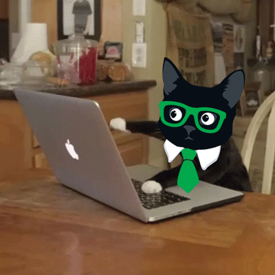

Klaus today
Conversation review &
QA platform for support teams
Klaus 2017
The spark ✨

Klaus 2018: part I
Gone fishing 🐳

Klaus 2018: part II
The build-up 🔨

Klaus 2019
Take-off! 🚀
Klaus 2020
Hitting orbit 🌍
This is us :3

Check meow-t

[klausapp.com/jobs](https://www.klausapp.com/jobs)
Promo code: `202020`
# Thanks!
Find the slides & me on:
[github.com/andreasvirkus](https://github.com/andreasvirkus)